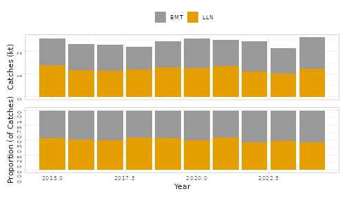
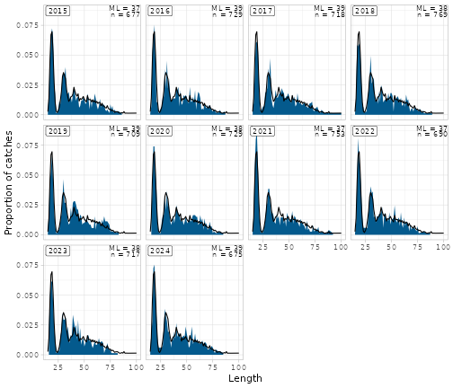
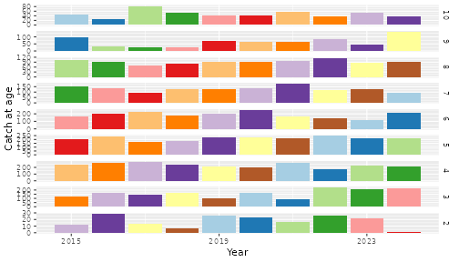
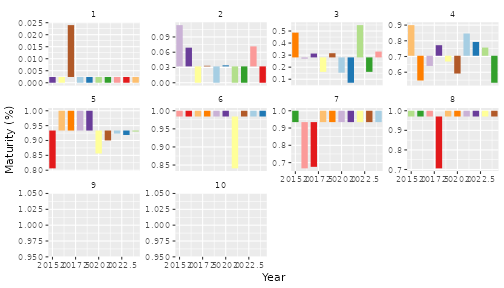
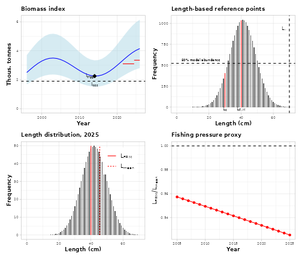

The technical reports (techreport_en.qmd,
techreport_is.qmd) document the data and the model behind
the advice. The hr_techreport_*() functions draw the
standard figures. They take one of three kinds of input:
-
the pax database (
pax_db): landings, sampling, length distributions, survey maps, e.g.hr_techreport_plot_landings_gear(),hr_techreport_plot_survey_ldist(),hr_techreport_plot_sampling_overview(); -
the model input table (
input_data, seevignette("input-data")): catch and survey at age, weights, maturity, e.g.hr_techreport_plot_catch_age_bubble(),hr_techreport_plot_maturity(),hr_techreport_plot_wm_left(); -
model or rule results: the SAM fit
(
hr_techreport_plot_samres_resid(), needs SAMutils), the Muppet fit, or for category 3 stocks the rfb rule (hr_techreport_plot_rfb_*()).
This vignette draws a few of each on the simulated toy database of
vignette("input-data") (the code is hidden here) and on
made-up rule results. Labels follow getOption("hr.lang"),
as in the advice sheets.
library(hafroreports)
options(hr.lang = "en")
# The toy input_data, as in vignette("input-data")
lw <- hr_input_data_lw(pax_db, sampling_type = 30, prediction_length_range = 1:120)
smb <- hr_input_data_si_index(
pax_db, sampling_type = 30, lw_key = lw,
maturity_key = hr_input_data_maturity_key(pax_db, lgroups = seq(0, 120, 5)),
strata_stations = toy_strata_stations
)
comm <- hr_input_data_si_index(
pax_db, sampling_type = 1, lw_key = lw, tgroup = list(t1 = 1:6, t2 = 7:12),
gear_group = list(BMT = "BMT", LLN = "LLN"), scale_by_landings = TRUE
)
input_data <- hr_input_data_combine(
2015, 2024, age_start = 1,
input_data_comm_index = comm, input_data_igfs_index = smb,
input_data_agfs_index = data.frame(year = numeric(), age = numeric(), n = numeric()),
input_data_landings = hr_input_data_landings(pax_db)
)From the pax database
Landings by gear group:
hr_techreport_plot_landings_gear(pax_db, gear_group = list(BMT = "BMT", LLN = "LLN"))
Survey length distributions by year:
hr_techreport_plot_survey_ldist(pax_db, sampling_type = 30)
The pax ldist table is already raised to the counted
fish when it is imported (pax_mar_ldist()). The
hafroreports survey length and location figures use it as it is; in your
own code, don’t apply pax::pax_ldist_scale_abund() again,
but pass
ldist_tbl = dplyr::tbl(pax_db, "ldist") |> pax::pax_ldist_scale_round()
to pax::pax_ldist_by_year() (25-wit,
04-whg). Raising twice made whiting length distributions a
few percent high in single years.
Several figures depend on stock-specific settings:
gear_group and depth_class (use the stock’s
gear groups and depth classes), regions and
keep_order for the regional figures,
strata_stations for the survey by area.
hr_techreport_plot_catchdepth() returns a two-panel
patchwork; change its fill scale with &, not
+ (23-ple).
From input_data
Catch at age as bubbles (area proportional to numbers):
hr_techreport_plot_catch_age_bubble(input_data, year_start = 2015, age_start = 2)
Maturity at age by year:
hr_techreport_plot_maturity(input_data, year_start = 2015)
Category 3: the rfb rule
The rfb figures take the survey index of the rule (columns
index, year, b in tonnes and
b_cv), the catch length distributions (year,
length, n), the rule’s reference points and
the rule’s components (as in
vignette("advice-sheets")):
survey_index <- data.frame(
index = "smb_harv",
year = 1996:2026,
b = 2500 + 800 * sin((1996:2026 - 1996) / 4) + 30 * (0:30),
b_cv = 0.2
)
ldist <- expand.grid(year = 2005:2025, length = 10:70)
ldist$n <- dnorm(ldist$length, 40 + (ldist$year - 2005) / 10, 8) * 1000
ref_points <- list(
I_trigger = 1900, I_lim = 1360, Lc = 30, Linf = 70,
target_reference_length = 0.75 * 30 + 0.25 * 70, F_msy_proxy = 1
)
rfb_prognosis <- data.frame(
component = c("index_A", "index_B", "mean_catch_length"),
value = c(3350, 3100, 45.5)
)
library(patchwork)
(hr_techreport_plot_rfb_index(survey_index, "smb_harv", rfb_prognosis, ref_points, assessment_year = 2026) +
hr_techreport_plot_rfb_lc(ldist, ref_points)) /
(hr_techreport_plot_rfb_ml(ldist, ref_points, data_year = 2025, rfb_prognosis = rfb_prognosis) +
hr_techreport_plot_rfb_f(ldist, ref_points, year_start = 2005)) &
hr_techreport_rfb_theme()
hr_techreport_dsl_basis(),
hr_techreport_plot_dsl_lc() and
hr_techreport_plot_dsl_ml() draw the length-based figures
of stocks whose rule uses survey length data as well.
Model fits
The SAM figures take SAMutils results and only run where
SAMutils is installed:
hr_techreport_plot_samres_resid(sam_fit)
hr_techreport_plot_samres_combfit(sam_fit, input_data)Copy a figure into the stock’s R/techreport.R only when
an argument can’t do what it needs (e.g. an age-based reference biomass
in the SAM summary, 03-sai), and note why.